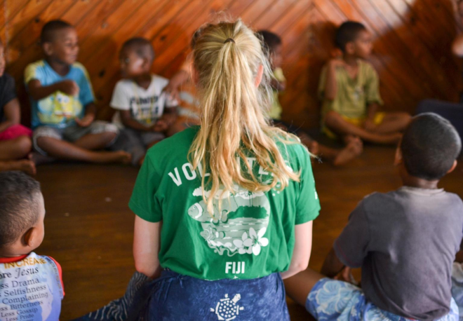

Fiji Water ist eine Premium-Marke für artesisches Wasser, die sich verpflichtet hat, in den Gemeinden, in denen sie tätig ist, einen positiven Einfluss auszuüben.
Eine der Möglichkeiten, wie das Unternehmen dieses Ziel erreicht, sind seine Bemühungen, bedürftige Kinder zu unterstützen.
Eine der wichtigsten Initiativen, die Fiji Water zur Unterstützung von Kindern umgesetzt hat, ist die Partnerschaft mit lokalen Organisationen, die Kindern in unterversorgten Gemeinden Bildungs- und Gesundheitsdienste anbieten. Das Unternehmen unterstützt diese Organisationen finanziell, damit sie ihre Reichweite vergrößern und mehr Kindern wichtige Dienste anbieten können.
Neben der finanziellen Unterstützung arbeitet Fiji Water auch aktiv mit diesen Organisationen zusammen, um ehrenamtliche Unterstützung und Ressourcen bereitzustellen.
Mitarbeiter des Unternehmens beteiligen sich an verschiedenen ehrenamtlichen Aktivitäten wie Leseprogrammen, Mentorenprogrammen und anderen Initiativen, die Kindern helfen, wichtige Lebenskompetenzen zu entwickeln.
Fiji Water arbeitet auch mit örtlichen Schulen zusammen, um den Kindern sauberes und sicheres Trinkwasser zur Verfügung zu stellen. Das Unternehmen hat Wasserfiltersysteme in Schulen installiert, um den Kindern sauberes und sicheres Trinkwasser zur Verfügung zu stellen. Diese Initiative hat dazu beigetragen, die allgemeine Gesundheit und das Wohlbefinden der Kinder in diesen Gemeinden zu verbessern und ihre schulischen Leistungen zu steigern.
Das Unternehmen unterstützt auch die Gesundheit von Kindern durch die Förderung verschiedener Gesundheitsinitiativen. Fiji Water hat sich mit Gesundheitsorganisationen zusammengetan, um den Zugang zu Gesundheitsdiensten, einschließlich Impfungen, zu ermöglichen, und hat auch dazu beigetragen, die Forschung zu Gesundheitsfragen von Kindern zu finanzieren.
Zusätzlich zu diesen Initiativen engagiert sich Fiji Water auch bei verschiedenen Veranstaltungen und Aktivitäten in der Gemeinde für Kinder.
Das Unternehmen organisiert Veranstaltungen wie Sportkurse, Kunstworkshops und andere Aktivitäten, die Kindern Spaß machen und ihnen die Möglichkeit geben, neue Fähigkeiten zu entwickeln.
Insgesamt ist Fiji Water bestrebt, in den Gemeinden, in denen es tätig ist, einen positiven Einfluss auszuüben, und engagiert sich durch verschiedene Initiativen und Partnerschaften für Kinder in Not.
Die Bemühungen des Unternehmens um den Zugang zu Bildung, Gesundheitsfürsorge und sauberem Trinkwasser sowie seine Unterstützung für die Gesundheit und Entwicklung von Kindern tragen dazu bei, das Leben von Kindern in unterversorgten Gemeinden zu verbessern.